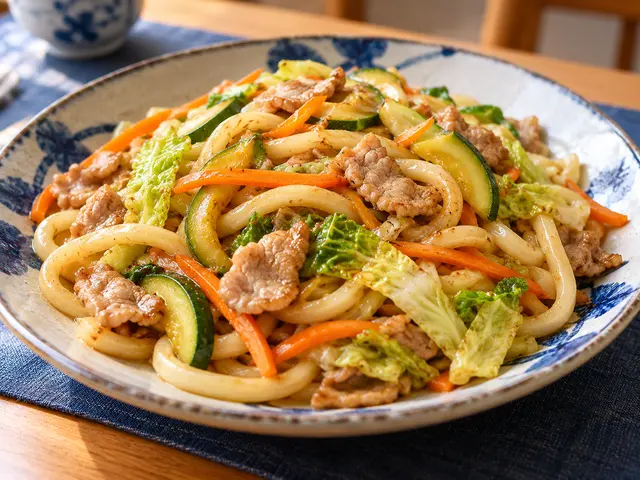
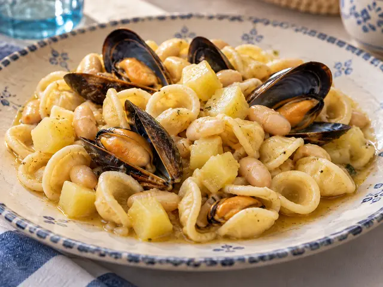

Udon con verdure e carne

Carote, zucchine, verza e suino
(1)
Controcorrente · Cucina italiana e di mare

Carote, zucchine, verza e suino
(1)

(1, 14)

(1, 7)

Al profumo di basilico
(1, 4)
Con carote, patate e riso bianco al vapore

Con fagiolini lessati
(1, 4)

Pollo, pancetta, Grana e pomodori
(7)
Prenotazioni entro le 12 · Attendere la conferma del Ristorante per considerare valido l’ordine · Acqua, caffè e coperto inclusi · Fino a esaurimento